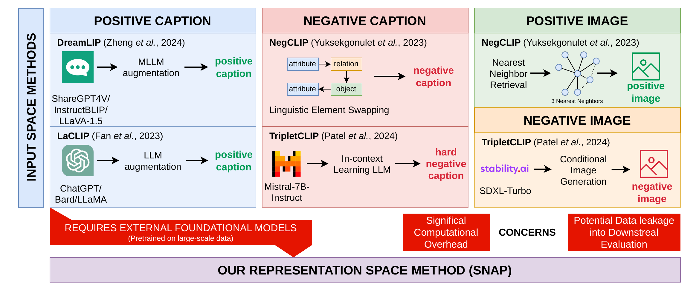
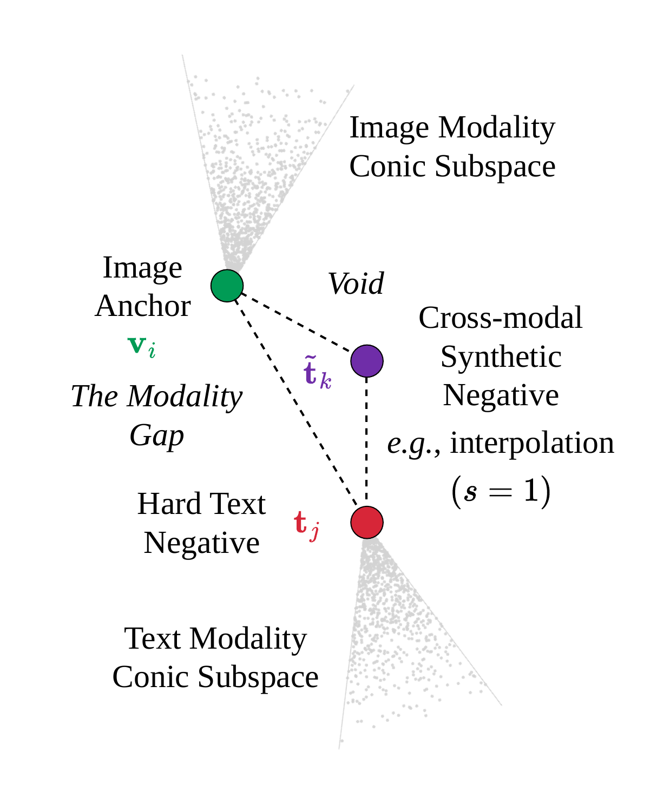
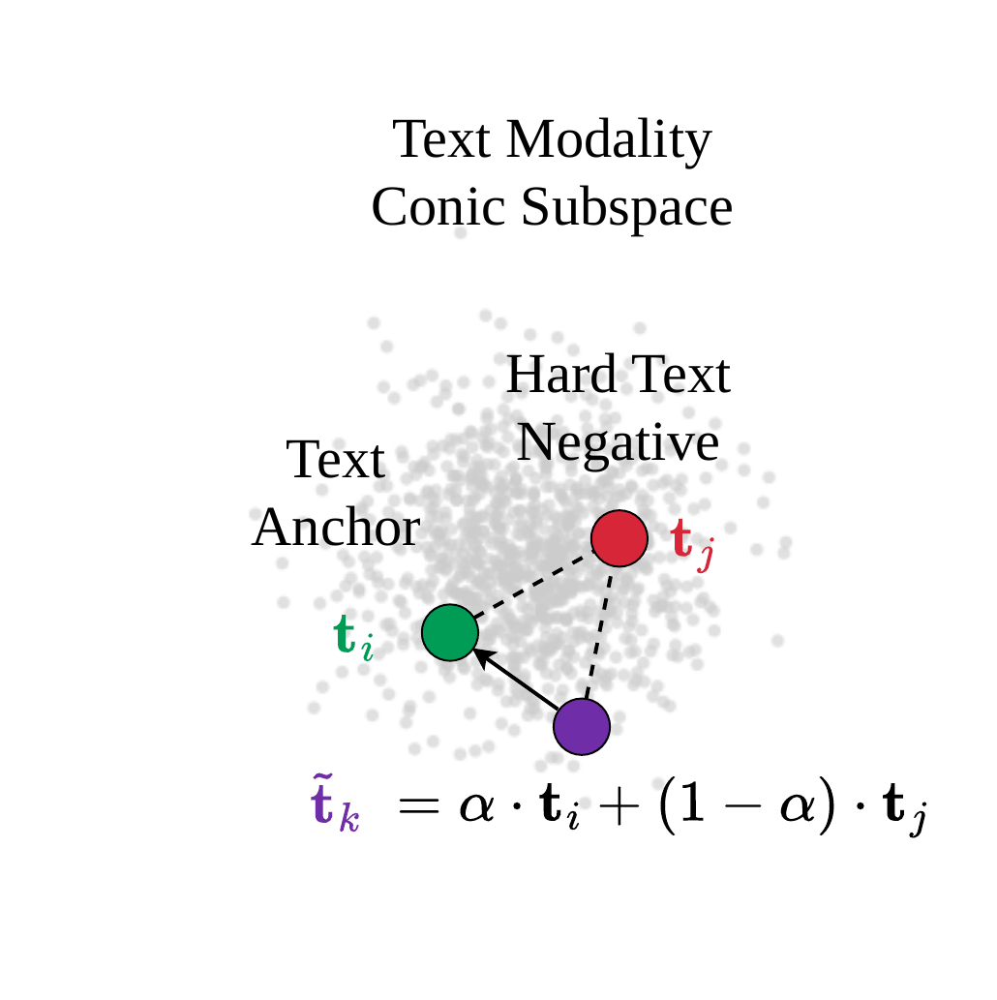
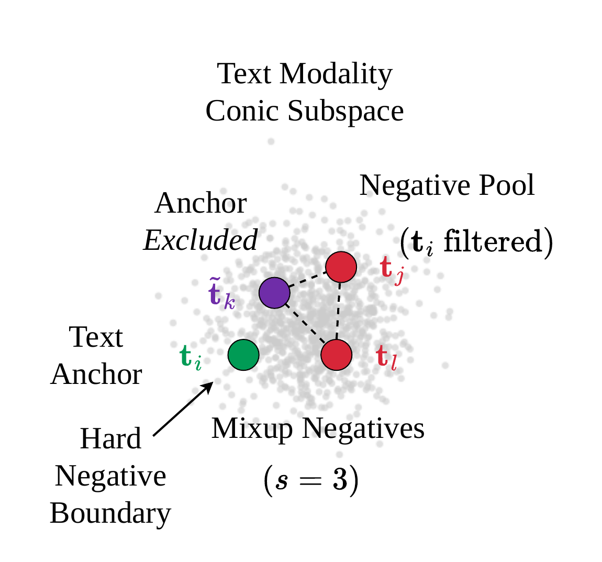
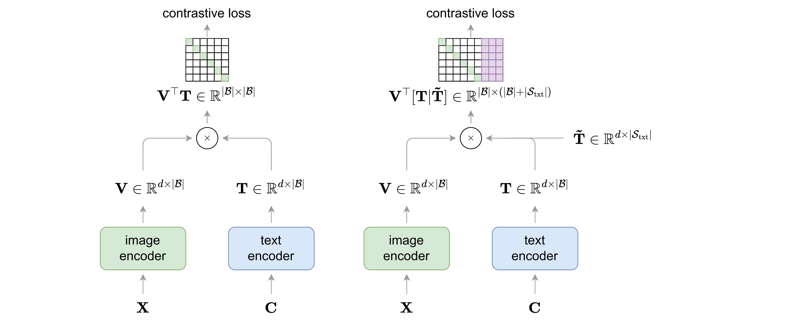
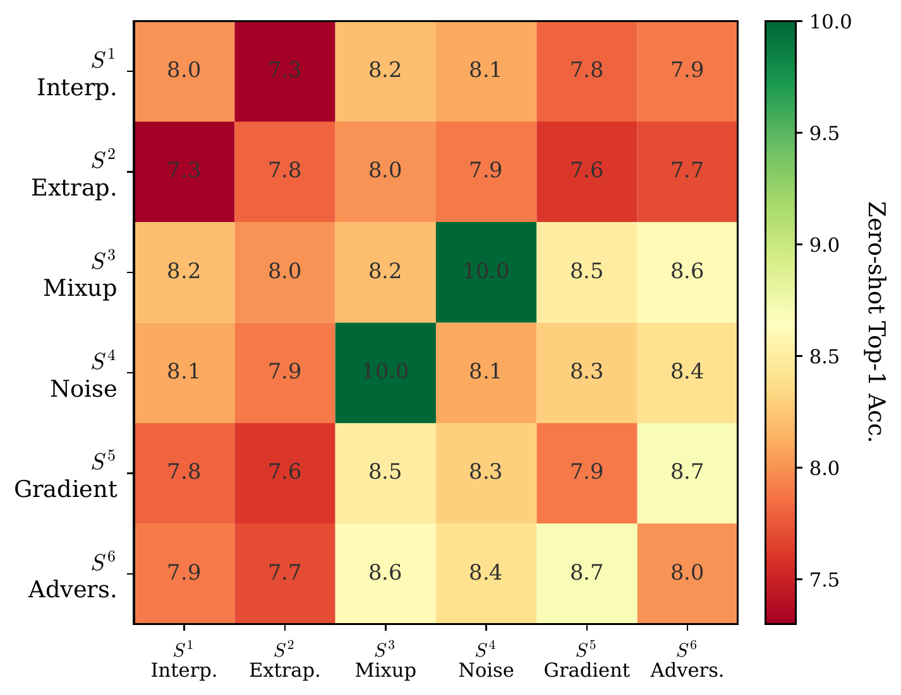
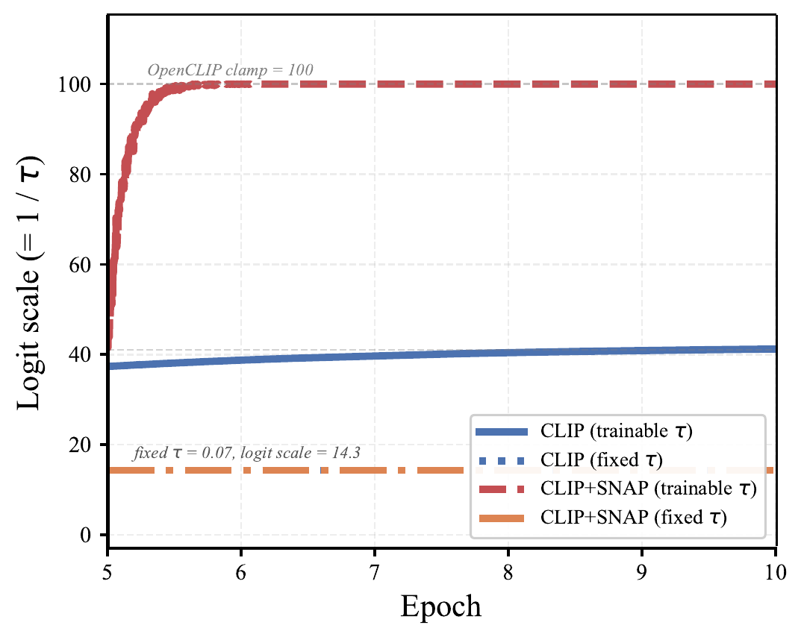

Overview
TL;DR
Synthetic hard negatives generated directly in the representation space work well for unimodal self-supervised learning, but naively transferring them to CLIP-style vision-language pretraining fails: cross-modal blends fall into the modality gap, and intra-modal blends that touch the positive leak its signal into the denominator. SNAP fixes both at once by generating intra-modal negatives that never involve the positive from either modality, delivering consistent gains on top of CLIP and FLIP with under 10% training overhead.
Abstract
Synthetic hard negatives generated in the representation space have proven effective for unimodal self-supervised learning, but transferring this idea to vision-language pretraining is not straightforward. We analyze six representation-space synthesis strategies and identify two failure modes in their transfer to vision-language pretraining: cross-modal constructions that produce overly easy negatives or pull them toward the query, and intra-modal constructions that incorporate the matched positive. We also observe logit-scale saturation when training with synthetic hard negatives and a learnable temperature, and find that fixing the temperature improves downstream performance. Using this geometric analysis we propose SNAP, which generates intra-modal hard negatives that never involve the positive from either modality, avoiding both failure modes entirely. SNAP is model-agnostic, requires no external generative models, and adds less than 10% training time overhead. Evaluated on top of CLIP and FLIP across multiple architectures and datasets, SNAP delivers consistent improvements on zero-shot retrieval, zero-shot classification, and linear probe evaluation.
Motivation
Representation-space negatives, two new ways to fail
CLIP-style pretraining samples image–text pairs randomly and pushes apart mismatched pairs via a batch-level InfoNCE loss, without controlling how hard the in-batch negatives actually are. In unimodal self-supervised learning, synthesizing hard negatives directly in the representation space is a fast, lightweight fix for exactly this problem, so the natural question is whether the same trick transfers to vision-language pretraining. It does not, and understanding why reveals constraints that have no unimodal analogue.

Representation space vs. input space. Existing methods for synthesizing hard vision-language data operate in the input space, i.e., LLMs rewriting captions or diffusion models generating images, incurring heavy compute and risking data leakage. SNAP instead synthesizes negatives directly from in-batch embeddings, symmetrically for both modalities.
Cross-modal failure
Image and text embeddings cluster in distinct cones of the shared space. Blending a query image embedding with a text negative lands in the void between the cones, a region real embeddings never occupy, making the synthetic negative trivially separable and uninformative.
Intra-modal failure
Switching to same-modality blends but mixing in the matched positive caption creates a synthetic "negative" that inherits genuine positive signal. The loss numerator pulls toward it while the denominator pushes away from it, a contradictory gradient that confuses optimization.

falls in the modality gap

inherits the positive's signal

avoids both failure modes
Geometric intuition. (a) Blending image and text embeddings creates samples that are trivially rejected. (b) Including the positive pair in synthesis creates negatives that contain the actual signal, causing gradient conflict. (c) Generating intra-modal negatives while filtering out the positive anchor respects the modality geometry on both counts.
Our approach
Guided by this geometric analysis, we propose SNAP (Synthetically Negative Augmented Pretraining): a model-agnostic method that generates synthetic hard negatives directly in the representation space for both image and text modalities, applicable on top of any InfoNCE-based framework such as CLIP or FLIP. We characterize the two failure modes with representation-level diagnostics, identify a secondary temperature-saturation effect, and use both to derive the three design choices that define SNAP.
Method
Intra-modal, positive-free, fixed temperature
We assume an image encoder \(f_\theta\) and text encoder \(g_\phi\) producing \(\ell_2\)-normalized embeddings \(\mathbf{v}_i, \mathbf{t}_i\) in a shared \(d\)-dimensional space. For a batch \(\mathcal{B}\), the standard bidirectional CLIP objective is:
\(\tau\) is a learnable temperature. Negatives are drawn exclusively from the batch, so discriminative ability depends heavily on batch size and composition.
Augmenting the denominator
For each image query \(\mathbf{v}_i\), we generate a set of synthetic text negatives \(\mathcal{S}_{\text{txt}}^i\) and add them to the image-to-text denominator (and symmetrically, synthetic image negatives \(\mathcal{S}_{\text{img}}^i\) to the text-to-image denominator):
Each query gets its own synthetic-negative set, generated from its own hard-negative pool; synthetic negatives are not shared across queries, and generation happens on pre-computed embeddings with no extra forward or backward pass through the encoders.
The symmetric text-to-image term, with synthetic image negatives \(\tilde{\mathbf{v}}_k\) drawn for each text query \(\mathbf{t}_i\). The final loss averages both directions: \(\bar{\mathcal{L}} = \tfrac{1}{2}(\bar{\mathcal{L}}_{\text{i2t}} + \bar{\mathcal{L}}_{\text{t2i}})\).

Architecture, image-to-text direction. Standard CLIP computes the similarity matrix \(\mathbf{V}^\top\mathbf{T}\) using only batch negatives (white cells) and the positive pair (green). SNAP concatenates synthetic text negatives \(\tilde{\mathbf{T}}\) (purple cells) onto the batch, forming an augmented similarity matrix at negligible extra cost. The text-to-image direction follows the analogous procedure.
Six candidate generation strategies
Hardness is defined by cosine similarity to the query: given image query \(\mathbf{v}_i\), we select the top-\(N\) batch text negatives with highest similarity to \(\mathbf{v}_i\) as a hard-negative pool, then synthesize from it:
\(s{=}1,2\) involve the query embedding, producing cross-modal negatives; \(s{=}3,4\) operate only on same-modality negatives without touching any positive. This distinction turns out to be exactly what separates success from failure.
Cross-modal vs. intra-modal, all strategies vs. the survivors
Applying all six strategies cross-modally degrades well below the CLIP baseline. Converting to intra-modal mode helps but still underperforms, because strategies \(s{=}1,2\) now leak the positive instead. Restricting to \(s{=}3,4\) in intra-modal mode nearly recovers the baseline outright, and surpasses it once the temperature is fixed (next).
| Method | Strategies | Mode | IN-val | IN-v2 |
|---|---|---|---|---|
| CLIP | n/a | n/a | 10.4 | 8.4 |
| +SNAP | all 6 | cross | 7.6 | 6.8 |
| +SNAP | all 6 | intra | 8.7 | 7.5 |
| +SNAP | s=3,4 | intra | 10.0 | 8.0 |
All ablations on CC3M, ViT-B/16, with a learnable temperature, the remaining gap closes once \(\tau\) is fixed (below).

Pairwise strategy complementarity. Across every pairing, \(s{=}3\) and \(s{=}4\) consistently outperform any combination that involves cross-modal blending or the positive pair.
Geometric diagnostics
We quantify the failure modes directly: positive leakage as cosine similarity to the true positive (random baseline \(0.19\)), and trivially-separable rate (TSR) as the fraction of synthetics easier than the hardest 10% of real negatives.
| Strategy | TSR (%) ↓ | Δ hardness ↑ |
|---|---|---|
| s=1 (cross) | 0.3 | +0.281 |
| s=2 (cross) | 87.8 | −0.189 |
| s=1 (intra) | 0.6 | +0.133 |
| s=2 (intra) | 74.0 | −0.096 |
| s=3 (SNAP) | 2.2 | +0.041 |
| s=4 (SNAP) | 13.2 | +0.045 |
Only \(s{=}3,4\) avoid both cross-modal mixing and explicit positive inclusion: leakage at or below the random baseline, low TSR, and positive relative hardness.
Temperature divergence
Adding synthetic negatives changes the contrastive denominator's interaction with a learnable temperature. With the positive-free intra-modal strategies active, CLIP+SNAP's logit scale saturates the OpenCLIP clamp (100) within half an epoch, over-sharpening the softmax and suppressing gradient from exactly the hard negatives we added. Fixing \(\tau = 0.07\) removes this failure mode entirely.

Logit-scale trajectories (ViT-B/32, CC3M, epochs 5–10). CLIP+SNAP with learnable \(\tau\) saturates the clamp almost immediately; both fixed-\(\tau\) runs stay stable.
| Method | \(\tau\) | IN-val | IN-v2 |
|---|---|---|---|
| CLIP | learnable | 10.4 | 8.4 |
| CLIP | fixed | 10.1 | 8.0 |
| CLIP+SNAP | learnable | 10.0 | 8.0 |
| CLIP+SNAP | fixed | 11.0 | 9.6 |
SNAP: three design choices
- s=3,4 Intra-modal, positive-free strategies only, avoiding both cross-modal geometric collapse and intra-modal positive leakage.
- τ=0.07 Fixed temperature rather than learned, preventing the logit-scale saturation that synthetic hard negatives otherwise trigger.
- i2t + t2i Bidirectional synthesis for both image and text queries, which outperforms either direction alone or repeating/reweighting existing negatives as a control.
Computational overhead
Since SNAP generates negatives via vector additions, scalar multiplications, and normalization on already-computed embeddings, it adds no extra forward or backward pass through the encoders.
Results
Consistent gains across backbones, scales, and tasks
We train CLIP and FLIP baselines and their SNAP variants under matched data and training budgets, across three backbones (ViT-B/16, ViT-B/32, RN-50), two pretraining scales (CC3M, CC12M), and three downstream families: zero-shot retrieval (Flickr30k, MSCOCO), zero-shot classification (ImageNet and 10 transfer datasets), and linear probing. For CC3M we pretrain three seeds and report the mean.
Representative results
| Backbone | Data | Task | Baseline | +SNAP |
|---|---|---|---|---|
| ViT-B/32 | CC3M | Zero-shot IN top-1 (CLIP) | 8.0 | 8.2 |
| ViT-B/16 | CC3M | Zero-shot IN top-1 (CLIP, fixed τ) | 10.4 | 11.0 |
| ViT-B/32 | CC3M | Zero-shot Aircraft (CLIP) | 1.9 | 3.4 |
| ViT-B/32 | CC3M | Flickr30k text R@1 (CLIP) | 9.8 | 10.4 |
| ViT-B/16 | CC12M | Linear probe IN top-1 (CLIP) | 58.7 | 59.9 |
| RN-50 | CC3M | Linear probe IN top-1 (CLIP) | 50.0 | 51.4 |
| ViT-B/16 | CC3M | Zero-shot IN top-1 (FLIP) | 10.3 | 11.0 |
A small sample of the full results across Flickr30k/MSCOCO retrieval, 11-way zero-shot classification, and linear probing, see the paper for the complete tables. Gains appear in the large majority of settings for both CLIP and FLIP, holding across all three backbones; the few exceptions are isolated cells unchanged or lower by at most a few tenths of a point.
Discussion & Limitations
A dual-modality constraint, not a CLIP-specific one
The failure modes we identify arise from the dual-modality structure of contrastive learning rather than from any CLIP-specific architectural choice, so we expect SNAP's design principles to be relevant to other dual-encoder frameworks that use representation-space synthetic negatives. Our evaluation is limited to CC3M and CC12M due to computational constraints; scaling to larger datasets such as LAION-400M remains future work.
Citation
BibTeX
@misc{giakoumoglou2026snap,
title={{What Makes Synthetic Hard Negatives Work in Vision-Language Pretraining?}},
author={Nikos Giakoumoglou and Paschalis Giakoumoglou and Andreas Floros and Kleanthis Marios Papadopoulos and Tania Stathaki},
year={2026},
eprint={2610.09700},
archivePrefix={arXiv},
primaryClass={cs.CV},
url={https://arxiv.org/abs/2610.09700},
}